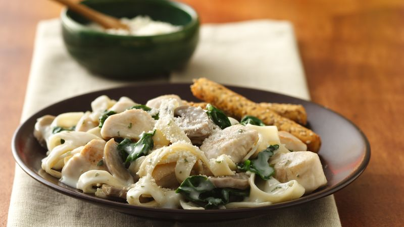

Spinach and Mushroom Fettuccini Alfredo Recipe

Ingredients
- 1 tablespoon butter or margarine
- 1 lb boneless skinless chicken breasts, cut into 1-inch pieces
- 2 cups milk
- 1/2 cup hot water
- 1 can (4 oz) mushroom pieces and stems, drained
- 1 box Chicken Helper™ fettuccine Alfredo
- 3 cups washed fresh spinach leaves, torn into pieces
- 1/4 cup grated Parmesan cheese
Directions
- In 10-inch skillet, melt butter over medium-high heat. Cook chicken in butter about 3 minutes, stirring occasionally, until outside turns white.
- Stir in milk, hot water, mushrooms and sauce mix (from Chicken Helper box). Heat to boiling, stirring occasionally. Stir in uncooked pasta (from Chicken Helper box). Reduce heat; cover and simmer about 10 minutes, stirring occasionally, until pasta is tender.
- Stir in spinach. Cook over medium-high heat about 2 minutes, stirring frequently, until hot. Remove from heat; uncover and let stand 5 minutes (sauce will thicken as it stands). Sprinkle with cheese.
Back to other recipes